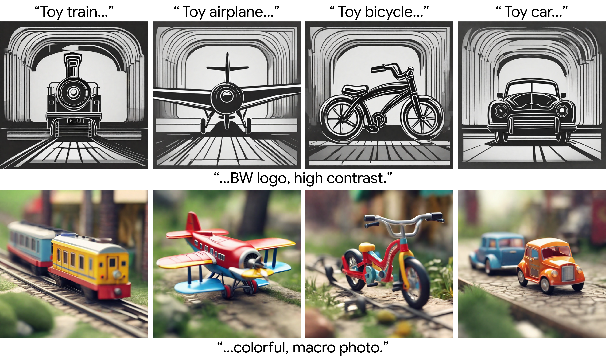
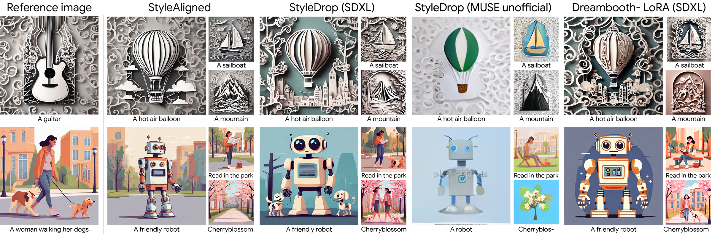
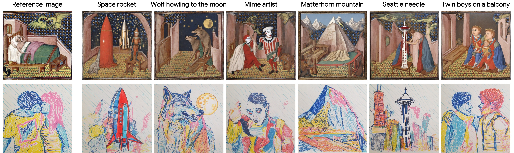
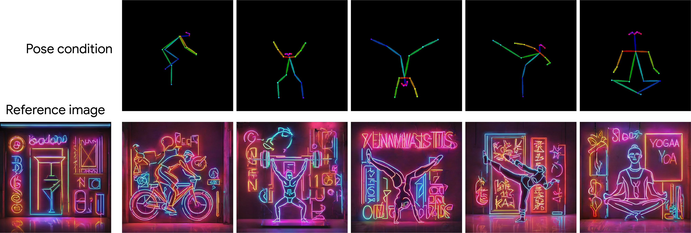

Style Aligned Image Generation via Shared Attention

Large-scale Text-to-Image (T2I) models have rapidly gained prominence across creative fields, generating visually compelling outputs from textual prompts. However, controlling these models to ensure consistent style remains challenging, with existing methods necessitating fine-tuning and manual intervention to disentangle content and style. In this paper, we introduce StyleAligned, a novel technique designed to establish style alignment among a series of generated images. By employing minimal `attention sharing' during the diffusion process, our method maintains style consistency across images within T2I models. This approach allows for the creation of style-consistent images using a reference style through a straightforward inversion operation. Our method's evaluation across diverse styles and text prompts demonstrates high-quality synthesis and fidelity, underscoring its efficacy in achieving consistent style across various inputs.
While proficient in aligning with the textual description of the style, state-of-the-art text-to-image models often create images that diverge significantly in their interpretations of the same stylistic descriptor. Given a style description of ``minimal origami'', standard text-to-image generation (left) outputs images with signifficantly different styles. With our method we make the model generation style-persisten (right).
Generation of images with a style aligned to the reference image on the left. In each diffusion denoising step all the images, except the reference, perform a shared self-attention with the reference image.
The target images attends to the reference image by applying AdaIN over their queries and keys using the reference queries and keys. Then, we apply shared attention where the target features are updated by both the target values Vt and the reference values Vr.
Our methods allows to generate style-consistent images with different prompts without any fine-tuning, outperforming personalization baselines.
This method also works well with style transfer from real image while doesn't require any training or model personalization.
It is also applicable in combination with other methods like ControlNet and Textual Inversion.
 @article{hertz2023StyleAligned,
title={Style Aligned Image Generation via Shared Attention},
author={Hertz, Amir and Voynov, Andrey and Fruchter, Shlomi and Cohen-Or, Daniel},
booktitle={arXiv preprint arxiv:TODO},
year={2023}
}
Acknowledgements: We thank Matan Cohen, Yael Pritch, Yael Vinker, TODO for their valuable inputs and early feedback that contributed to this work. We specially thank Yael Vinker for providing one of here artworks as style reference.
All of the images are generated with StyleAligned, first image serves as the style source.